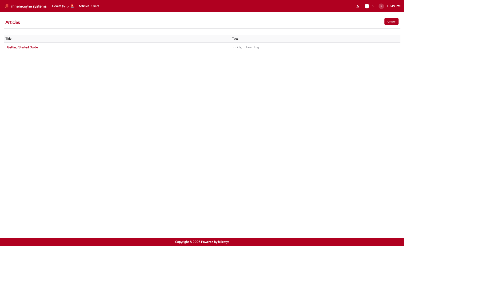

Articles
The Articles area in billetsys provides a shared knowledge base for solutions, guides, and reusable support information.

Purpose
Not every answer should stay locked inside a ticket conversation. The articles feature makes it possible to capture useful knowledge in a form that can be reused by other users and teams.
This helps billetsys support both reactive support work and longer-term knowledge sharing.
Typical content
Articles can be used for:
- Getting started guides
- Workaround descriptions
- Troubleshooting instructions
- Operational notes
- Reusable solution patterns
This makes the knowledge base a useful complement to ticket handling.
Reading articles
Articles can be browsed and opened from the shared article area. The goal is to make support knowledge available without requiring users to search through ticket histories.
For readers, the article pages provide:
- Title
- Tags
- Formatted body content
- Linked attachments when present
Searching articles
The global search bar in the header searches across both tickets and articles from any page. To find an article:
- Type any part of an article’s title in the search field. Matching articles appear in the dropdown below the input.
- Click a suggestion to navigate directly to that article.
- Press
Ctrl+K(orCmd+Kon macOS) to quickly focus the search field.
Writing articles
Billetsys supports article creation and editing for the roles that contribute directly to solution development and knowledge capture.
Article editing is designed for practical support documentation. Content can be written in a structured text format and enriched with attachments when supporting files are needed.
Each article title must be unique, so the knowledge base keeps one clear canonical entry per title.
Knowledge workflow
The article area works well as the next step after ticket resolution:
- A recurring issue is identified
- The solution is stabilized
- The result is written up as an article
- Future users and staff can reuse that information
This helps reduce repeated work and improves consistency in support responses.
Role perspective
The article area is shared, but not all roles participate in the same way.
In general:
- All authenticated users can benefit from reading shared knowledge
- Support-oriented roles can contribute and improve articles
- Administrative roles can oversee and manage the knowledge base more broadly
This keeps article publishing aligned with operational responsibility.
Attachments and formatting
Articles support richer content than a plain note. They can include structured text and file attachments, which makes them useful for step-by-step guides, examples, and reference material.
Linked from tickets
Ticket messages can reference articles using the $
mention syntax in the message editor. In the rendered message, the
mention is displayed as the article title. Each reference is recorded on
the ticket and shown in a dedicated Articles section, sorted by
title.
Keyboard shortcuts
Like all paginated list views in the application, the articles list
supports keyboard shortcuts for quick navigation. You can use
Alt+1 through Alt+0 to open items in the
currently visible list.
On the article form page, the following shortcuts are available to
jump directly to specific fields: * Alt+1: Jump to Title *
Alt+2: Jump to Tags * Alt+3: Focus the
Editor
These shortcuts work universally. See the Navigation chapter for more details.
Why it matters
The articles feature turns day-to-day support experience into reusable organizational knowledge. Over time, that helps billetsys serve not only as a ticket system, but also as a knowledge platform for support teams and customers.